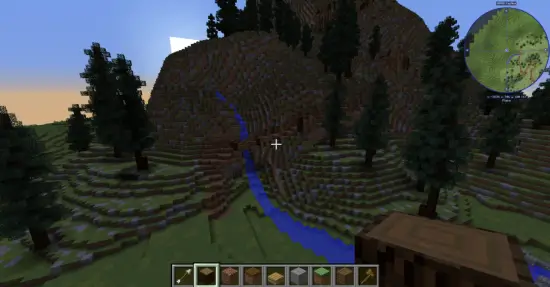

Dans Minecraft nous pouvons trouvez plusieur façon pour Construire nos idée
Le terraformingLe terraforming consiste a modifier le terrain pour inserré nos construction par exemple changer le style et la forme d'une montagne
Merci a Entity pour l'image
Les Builds d'Esthétiques
Les builds Esthétiques sont avant tout réalisées,pour leur apparence et leur beauté dans différent thèmes
différent builds Esthétiques
Les Builds de batiments